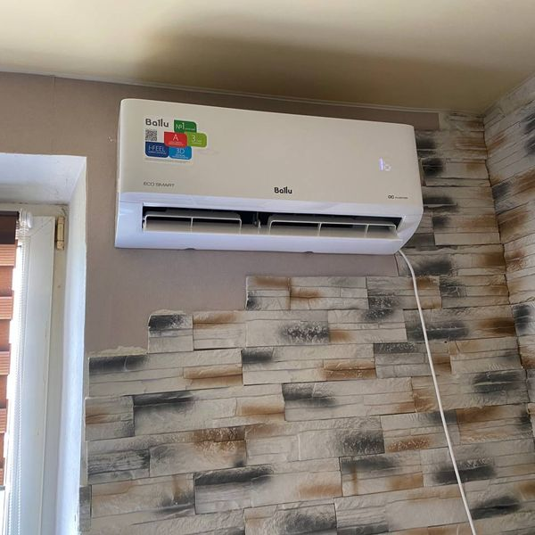
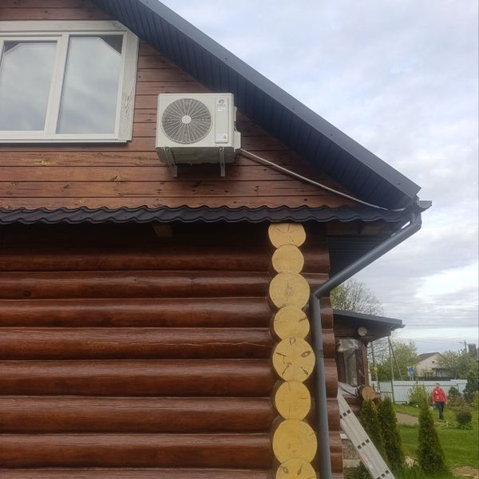

Короткий ответ: Да, можно, если ваша модель рассчитана на мороз. Обычный, не инверторный кондиционер обычно греет до −5…−7 °C на улице, многие инверторные до −15…−20 °C, а специальные «зимние» серии до −25…−30 °C. Точную цифру для вашей модели ищите в инструкции, в строке «рабочий диапазон при обогреве».
До какой температуры греет кондиционер
| Обычный (не инверторный) | обычно до −5…−7 °C |
| Инверторный | чаще всего до −15…−20 °C |
| Зимняя серия, например KingHome COSMO NORDIC | до −25 °C |
| KingHome Prestige Inverter | до −30 °C |
У нас в Беларуси большую часть зимы держится от 0 до −10 °C, поэтому даже обычный инвертор справляется с обогревом почти всю зиму. А в сильные морозы лучше переключиться на основное отопление.

Что будет, если греть в мороз ниже допустимого
- Масло в компрессоре густеет, и компрессор работает на износ. Замена компрессора часто стоит как половина нового кондиционера.
- Мощность обогрева падает: кондиционер работает без остановки, а в комнате прохладно.
- Наружный блок обрастает льдом, может замёрзнуть дренаж.
- На дисплее появляются ошибки, и кондиционер уходит в защиту.
Как правильно греться кондиционером зимой
- Посмотрите в инструкции минимальную температуру для обогрева и не включайте кондиционер, когда на улице холоднее.
- Ставьте 22–24 °C, а не 30 °C. В комнате не станет теплее быстрее, а кондиционер будет работать на пределе.
- Раз в 2–4 недели промывайте фильтры. Грязный фильтр снижает мощность обогрева.
- Следите, чтобы наружный блок не завалило снегом и на него не падали сосульки. Лёд с решётки не сбивайте металлическими предметами, так легко повредить теплообменник.
- Не включайте зимой охлаждение. Для серверных и комнат, где холод нужен круглый год, ставится специальный зимний комплект.

Это нормально, не пугайтесь
- Первые минуты после включения не дует. Кондиционер сначала прогревает теплообменник, чтобы не дуть холодным воздухом.
- Раз в несколько часов обдув останавливается на 5–10 минут, а из наружного блока идёт пар. Это оттайка: кондиционер сам растапливает лёд на наружном блоке.
- Из наружного блока капает вода. Это растаявший лёд после оттайки.
Нужно ли обслуживание перед зимой
Если вы греетесь кондиционером, он работает почти круглый год, и одного обслуживания в год уже мало. Мы советуем два: весной перед жарой и осенью перед холодами. Мастер почистит теплообменники, проверит давление фреона и дренаж и проверит работу на обогрев. Обслуживание стоит от 100 BYN: обслуживание кондиционеров в Могилёве, в Минске.
Если ваш кондиционер не греет в мороз
Иногда причина в поломке или нехватке фреона, и тогда поможет диагностика и ремонт (от 40 BYN). Но чаще просто старая модель не рассчитана на холод. Если хотите греться кондиционером всю зиму, посмотрите модели для нашего климата:
- KingHome Prestige Inverter: греет до −30 °C, мощность обогрева 3,5 кВт, до 25 м².
- KingHome COSMO NORDIC: греет до −25 °C, управление с телефона по Wi-Fi, до 25 м².
Вопросы и ответы
Выгодно ли отапливаться кондиционером?
Инвертор на каждый киловатт электричества даёт 3–4 киловатта тепла, так что это заметно дешевле обогревателя.
Можно ли оставлять кондиционер на обогреве на ночь?
Да, инвертор для этого и сделан: он держит температуру на малой мощности. Удобно включить ночной режим.
Почему кондиционер дует холодным на режиме обогрева?
Если это продолжается больше 10 минут, проверьте режим на пульте и фильтры. Если всё верно, возможна нехватка фреона или неисправность клапана. Позвоните нам, инженер подскажет.